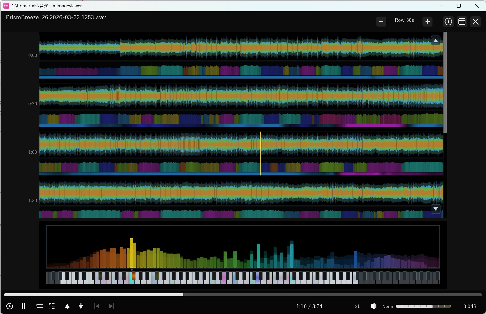

音楽を波形・スペクトラムで再生
音声ファイルは、フルスクリーンの「音楽ビュー」で波形とスペクトラムを見ながら再生できます。 動画を流しながら映像だけを消して音に集中することもできます。ここでは音楽ビューへの入り方と、 波形・スペクトラムを使った聴き方、基本の再生操作を紹介します。

音楽ビューを開く
音楽ビューに入る方法は 2 通りあります。
- 音声ファイルを直接開く：MP3 / FLAC / WAV / M4A / AAC / OGG / Opus / WMA は グリッド一覧に画像や動画と一緒に並びます。ダブルクリック（または Enter）で開くと、 フルスクリーンの音楽ビューが開いて自動再生が始まります。
- 動画から音声だけに切り替える：動画を再生しているとき、上部バーの ♪ ボタン（または Z キー）を押すと、映像を消して音声だけを音楽ビューで 聴けます。音は途切れず、再生位置や音量はそのまま引き継がれます。
音楽に集中したいときは、♪ ボタン（または Z キー）で音声モードに切り替えると、
映像の代わりに波形・スペクトラムを見ながら聴けます。音声モードのまま前後のファイルへ
移動することもできます。元の動画表示に戻るには、上部バーの ▶ ボタンか、
もう一度 Z キーを押します。この切り替えの詳しい使い方は
動画をインライン再生するで説明しています。
波形・スペクトラムで聴く
音楽ビューを開くと、画面中央に曲全体の波形タイムラインが、画面下部にリアルタイムのスペクトラムが 表示されます。
- 波形タイムライン（中央）：曲全体を行に分けて表示する波形です。再生位置には 縦線（プレイヘッド）が表示され、曲の盛り上がりどころを見ながら好きな位置へ移動できます。 1 行あたりの長さは上部バーのセレクタで切り替えられます。
- スペクトラム＋鍵盤（下部）：再生位置周辺の周波数を音の高さごとのバーで表示し、 その下の 88 鍵のピアノ鍵盤が、鳴っている音にあわせて発光します。鍵の色は音名（ピッチクラス）で決まります。
鍵盤は、各鍵が縦方向のグラデーションで光ります。中央が基音（その音そのもの）、 下側が偶数倍音、上側が奇数倍音の強さを表し、倍音を多く含む音ほど 鍵の上下方向へ光が長く伸びます。どの音域が鳴っているか、音色がシンプルか倍音豊かかがひと目で分かります。
再生操作
音楽ビューのキーボード操作は動画再生と共通です。主な操作は次のとおりです。
| 操作 | 動作 |
|---|---|
| Space / Enter | 再生 / 一時停止をトグル |
| W | 先頭へ移動して再生 |
| Shift+← / → | 1 秒シーク（細かい） |
| Ctrl+← / → | 30 秒シーク（大きい） |
| Shift+↑ / ↓ | 音量を上げる / 下げる |
| ↑ / ↓ | 前 / 次のファイルへ移動 |
| M | ミュートのトグル |
| Z | 音声モードの切り替え（動画再生中は映像を消す / 音声モード中は動画表示へ戻す） |
画面下部の HUD にはシークバーと再生コントロールが並びます。シークバーはクリック / ドラッグで頭出しでき、 マウスを止めると HUD は自動的に隠れます。
ループ・連続再生・ブックマーク・VST3 プラグイン処理・レーティングやタグなど、より詳しい機能は
音楽再生リファレンスにまとまっています。